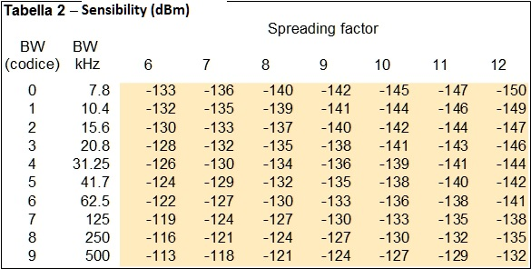
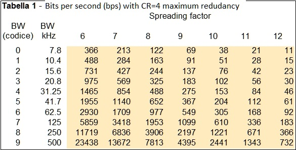

Sensibility and bps  Code RedundancyCR = 1 means 5/4 redundancy CR = 2 means 6/4 redudancy CR = 3 means 7/4 redudancy CR = 4 means 8/4 redudancy that is double bits Transmission powerPW = 1 -> 7dBm -> 5 mW PW = 2 -> 10dBm -> 10mW PW = 3 -> 13dBm -> 20mW PW = 4 -> 17dBm -> 50mW PW = 5 -> 20dBm -> 100mW
|
IndexFunctionsExamples |